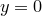
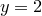

set boxfrom <value>
The setting boxfrom alters the vertical line from which bars are drawn when PyXPlot draws bar charts. By default, bars all originate from the line , but the example
set boxfrom 2
would make the bars originate from the line . The specified vertical abscissa value may have any physical units, but must be real and finite.